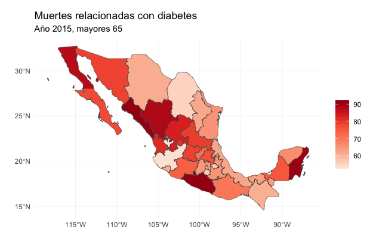
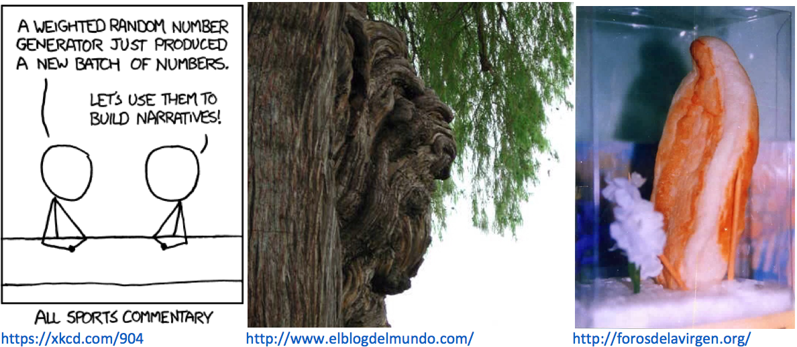
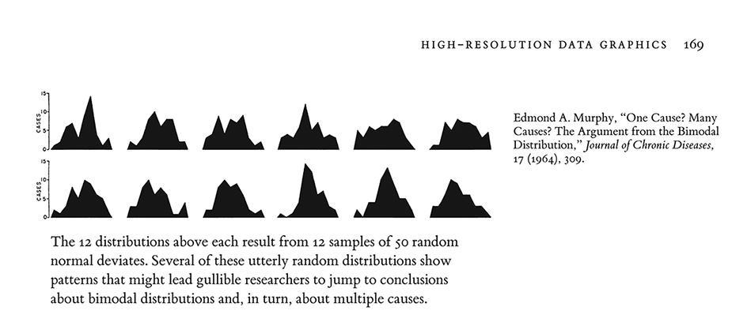
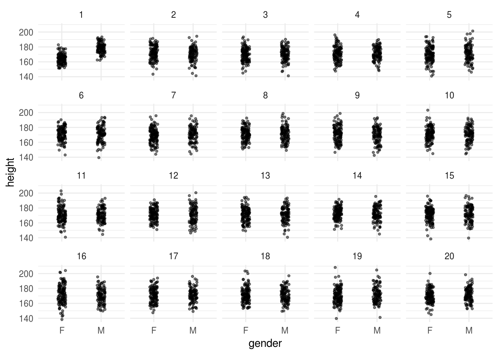
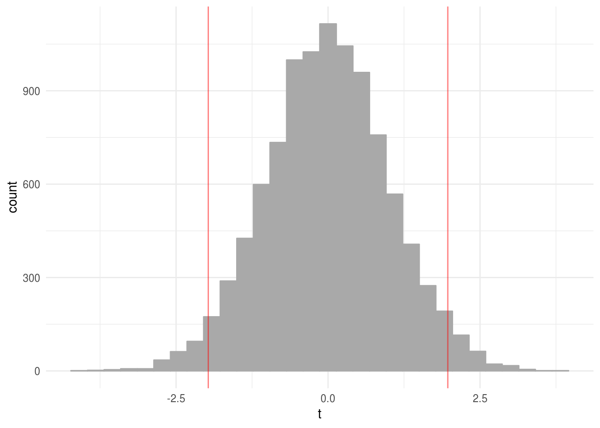
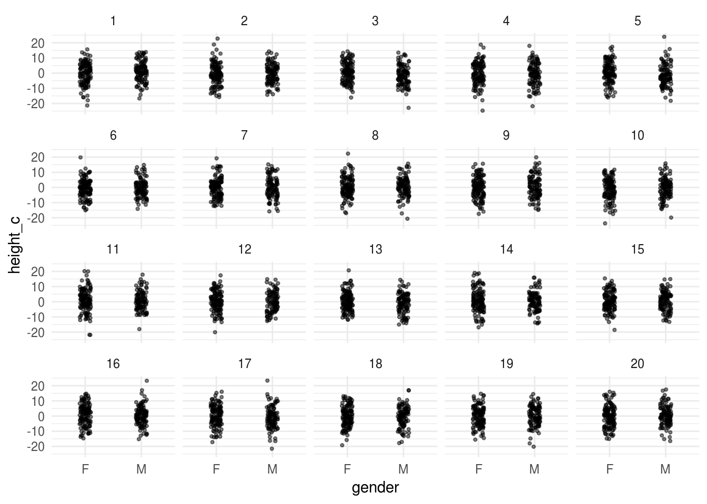
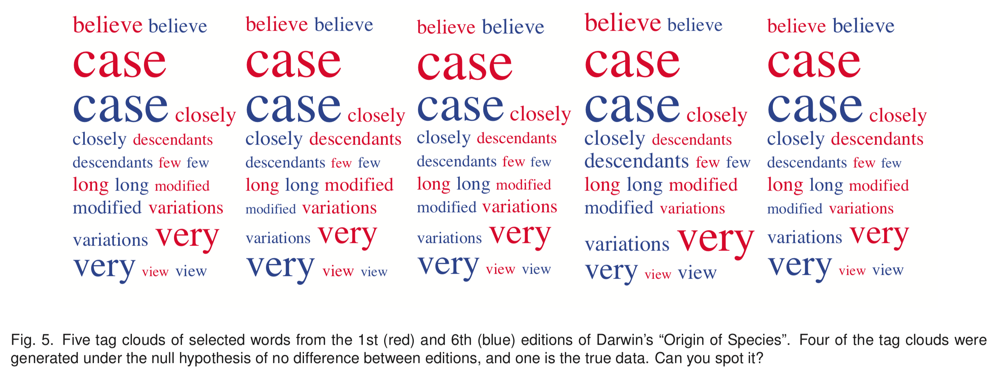
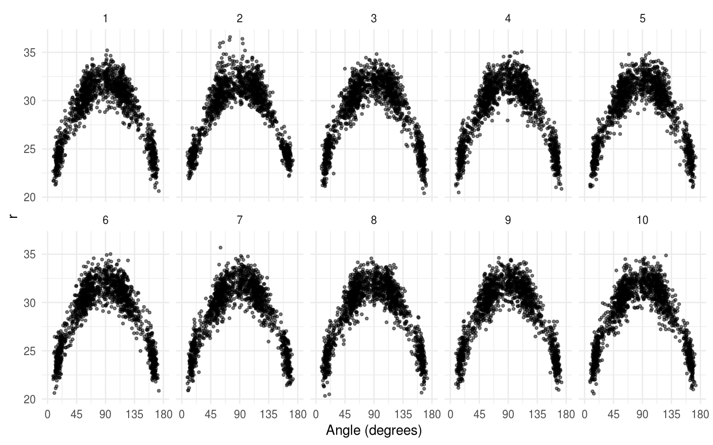
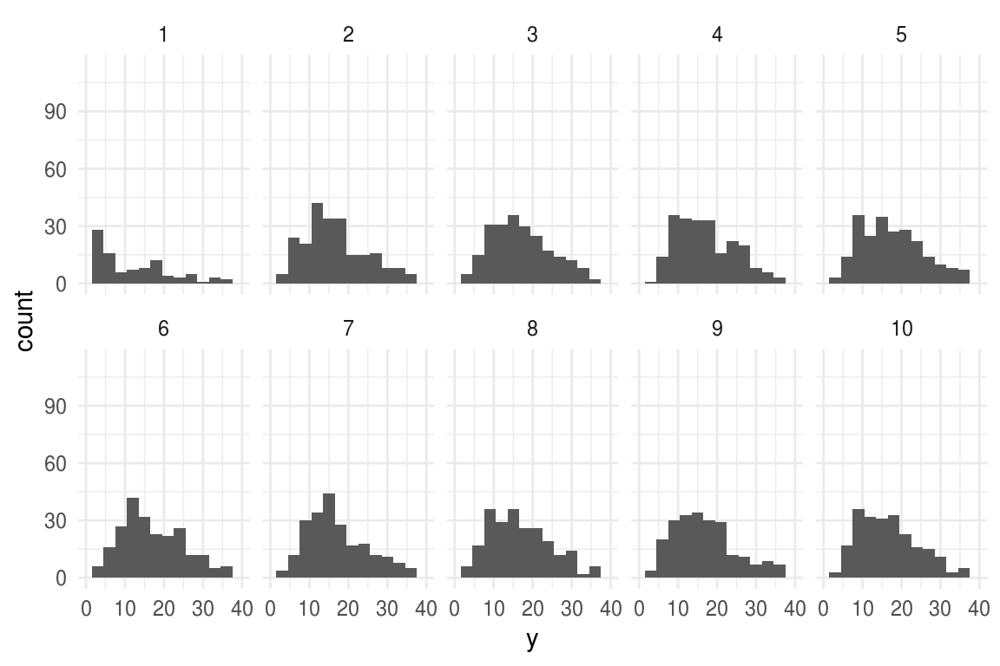
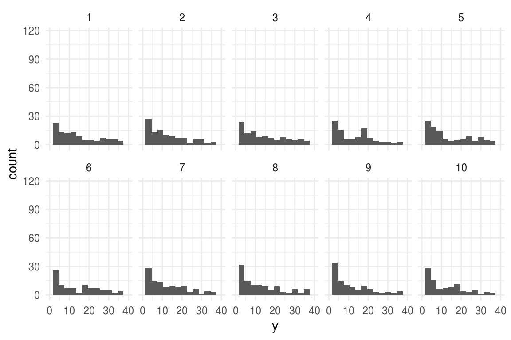

8.3 Inferencia visual
Las gráficas nos ayudan a descubrir patrones, a diferencia de los modelos las gráficas nos pueden sorprender y podemos entender relaciones en las variables que de otra manera sería difícil.
La siguiente gráfica muestra las tasas de mortalidad por diabetes para mayores de 75 años. Usamos las siguientes fuentes:
INEGI - México estadísticas vitales, defunciones generales y fetales 2015.
CONAPO - Estimaciones y proyecciones de la población, datos descargados de CONAPO.

Apofenia
El ímpetu por concluir (rage-to-conclude bias, Tufte) nos hace ver patrones en datos donde no existen dichos patrones. Esto puede conllevar a inferencias prematuras, el análisis estadístico busca alinear la realidad en la evidencia con la inferencia que se realiza a partir de dicha evidencia.

La inferencia visual nos permite descubrir nuevas relaciones, controlando la apofenia.
¿Qué mapa muestra las tasas de mortalidad reales?
 Si podemos distinguir los datos hay evidencia estadística rigurosa de
un patrón espacial en las tasas de mortalidad que se puede detectar en la
gráfica.
Si podemos distinguir los datos hay evidencia estadística rigurosa de
un patrón espacial en las tasas de mortalidad que se puede detectar en la
gráfica.
Inferencia
Recordemos que la inferencia ocurre cuando usamos muestras de los datos para concluir acerca de la población completa.
Típicamente se usan estadísticas (funciones de la muestra) como medias, desviaciones estándar, medianas, etc. y nuestros conocimientos de como se comportan las estadísticas a lo largo de las posibles muestras (ej. error estándar de la media).
En el caso de inferencia visual las estadísticas son las gráficas.
Las referencias de esta sección son los artículos Hofmann et al. (2010), Cook et al. (2012), Buja et al. (2009), la discusión en el sitio de Tufte, E. Making better inferences from statistical graphics y la presentación de Cook, D. To the tidyverse and beyond: Challenges to the future of data science.
Protocolos de inferencia visual
Rorschach. Antes de observar los datos, grafica una serie de datos nulos, para obtener una idea de como se vería nuestra gráfica cuando no hay relación entre las variables.
Lineup. Escondemos la gráfica de los datos en un conjunto de datos nulos y pregunta a un tercero si puede identificar los datos reales. Si eligen la gráfica con los datos verdaderos tenemos evidencia de que los datos tienen estructura que es significativamente diferente a lo que esperaríamos por azar.
Datos nulos
Para generar datos nulos podemos usar un método no paramétrico o uno paramétrico.
Permutación: Seleccionamos una de las columnas de los datos de interés y permutamos los valores.
Simulación: Suponemos que una variable sigue una distribución y simulamos de esta.
Calibración con Rorschach
La siguiente imagen proviene de un escrito de Edmond Murphy que en 1964 escribió sobre la dudosa inferencia de mecanismos causales a partir de la observación de una distribución bimodal (Tufte (1986), p. 169):

Ejemplo: Estaturas
Estaturas de hombres y mujeres. Supongamos que nos interesa describir de manera simple los datos, independientemente de si se trata de un hombre o una mujer.
glimpse(singer_g)
#> Observations: 235
#> Variables: 2
#> $ gender <chr> "F", "F", "F", "F", "F", "F", "F", "F", "F", "F", "F", ...
#> $ height <dbl> 163, 157, 168, 165, 152, 155, 165, 168, 165, 160, 170, ...- Suponemos que la estatura es una medición que se distribuye aproximadamente normal con media 171 cm y desviación estándar 10 cm. ¿Es razonable esta descripción?*
Una manera de probar que tan buena es esta descripción es considerando qué es lo que veríamos si el modelo es el que acabamos de mencionar, para esto hacemos 19 simulaciones bajo el modelo \(N(\mu, \sigma^2)\) y las comparamos con los datos observados. ¿Captura este modelo las características observadas?
library(nullabor)
sing_null <- lineup(null_dist('height', dist = 'normal',
params = list(mean = 171, sd = 10)), n = 20, singer_g)
#> decrypt("A3tW nwmw RI hOGRmROI 00")
ggplot(sing_null, aes(x = gender, y = height)) +
facet_wrap(~ .sample) +
geom_jitter(position = position_jitter(width = 0.1, height = 1),
size = 0.8, alpha = 0.5)
Veremos como estas pruebas visuales se comparan con las pruebas de hipótesis típicas de estadística.
Pruebas de hipótesis típicas
Antes de proseguir recordemos los conceptos de prueba de hipótesis:
Hipótesis nula (\(H_0\)): hipótesis que se desea contrastar, describe la conducta default del fenómeno de interés.
Hipótesis alternativa (\(H_1\)).
Estadística de prueba: es una estadística con base en la cuál tomamos la decisión de rechazar o no rechazar. Se calcula considerando la hipótesis nula como verdadera.
Valor-p: Nivel de significancia alcanzado, probabilidad de que la estadística de prueba sea al menos tan extrema como la observada con los datos si la hipótesis nula es verdadera.
| Escenario | \(H_0\) verdadera | \(H_0\) Falsa |
|---|---|---|
| Rechazar \(H_0\) | Error Tipo 1 (\(\alpha\)) | Decisión correcta |
| No rechazar \(H_0\) | Decisión correcta | Error tipo 2 (\(\beta\)) |
Ejemplo: estaturas
Usamos datos de estaturas, la hipótesis nula es que la media de las estaturas es la misma para hombres y mujeres. Hipótesis: \[H_0:\mu_m = \mu_h\] Estadistica de prueba es: \[Z=\frac{\bar{X_m}-\bar{X_h}}{\hat{\sigma}\sqrt{1/n_1+1/n_2}}\] la prueba se basa en una distribución \(t\) con \(n_1 + n_2 - 2\) grados de libertad.
heights_f <- singer_g$height[singer_g$gender == "F"]
heights_m <- singer_g$height[singer_g$gender == "M"]
n_f <- length(heights_f)
n_m <- length(heights_m)
t <- (mean(heights_m) - mean(heights_f)) / (sd(singer_g$height) *
sqrt(1 / n_f + 1 / n_m))
t
#> [1] 11.2Y rechazamos si \(t\) es menor/mayor al valor crítico \(t^*\).
t_star <- qt(0.025, n_f + n_m -2)
t_star
#> [1] -1.97Datos nulos: ¿Cómo se ven los inocentes?
nulos <- data.frame(t = rt(10000, 233))
ggplot(nulos, aes(x = t)) +
geom_histogram(color = "darkgray", fill = "darkgray") +
geom_vline(xintercept = c(t_star, -t_star), color = "red",
alpha = 0.5)
#> `stat_bin()` using `bins = 30`. Pick better value with `binwidth`.
Notamos que el valor obtenido con nuestros datos está en las colas de la distribución, es decir, es muy poco plausible observar un valor tan bajo como el que obtenemos bajo la hipótesis nula. ¿Cómo calculamos el valor-p con simulación?
Inferencia visual
Los principios de pruebas de hipótesis son los mismos para pruebas visuales, a excepción de dos aspectos: la estadística de prueba y el mecanismo para medir similitud.
La estadística de prueba ahora es una gráfica de los datos, y en lugar de una diferencia matemática usamos el ojo humano.
En la siguiente prueba gráfica, los verdaderos datos están escondidos entre 19 gráficas de datos nulos, donde un dato nulo es una muestra de la distribución bajo la hipótesis nula. Si es posible identificar los datos, hay evidencia indicando que estos son distintos a los datos nulos.
Prueba visual 1. Genera n-1 datos nulos (datos que siguen la hipótesis nula)
Grafica los nulos + los datos reales, donde los datos están posicionados de manera aleatoria.
Muestra la gráfica a un observador imparcial.
¿Pueden distinguir los datos? Si es el caso, hay evidencia de diferencia verdadera (valor p = 1/n).
Regresando a estaturas
Volvamos al ejemplo de las estaturas, proponemos el siguiente modelo: la estatura es aproximadamente normal con media 179 para hombres y 164 para mujeres, la desviación estándar es de 6.5 en ambos casos.
singer_g %>%
group_by(gender) %>%
summarise(mean(height), sd(height))
#> # A tibble: 2 x 3
#> gender `mean(height)` `sd(height)`
#> <chr> <dbl> <dbl>
#> 1 F 164. 6.33
#> 2 M 179. 6.92library(nullabor)
singer_c <- singer_g %>%
group_by(gender) %>%
mutate(height_c = height - mean(height))
set.seed(26832)
sing_null_c <- lineup(null_dist('height_c', dist = 'normal',
params = list(mean = 0, sd = sd(singer_c$height_c))), n = 20, singer_c)
#> decrypt("A3tW nwmw RI hOGRmROI 0Y")
head(sing_null_c)
#> gender height height_c .sample
#> 1 F 163 -2.579 1
#> 2 F 157 1.151 1
#> 3 F 168 3.589 1
#> 4 F 165 0.496 1
#> 5 F 152 8.716 1
#> 6 F 155 -16.618 1Prueba:
ggplot(sing_null_c, aes(x = gender, y = height_c)) +
facet_wrap(~ .sample) +
geom_jitter(position = position_jitter(width = 0.1, height = 1),
size = 0.8, alpha = 0.5)
En esta segunda prueba gráfica no rechazamos la hipótesis nula.
¿Porqué pruebas visuales?
En el ejemplo de estaturas se pueden utilizar pruebas estadísticas tradicionales, sin embargo, estas pruebas no cubren todas las complejidades que pueden surgir en una exploración de datos.
El siguiente es un lineup de nubes de palabras tomado de Graphical Inference for Infovis.

Además, las pruebas visuales nos pueden enseñar no solo si rechazamos la hipótesis nula, sino que en ocasiones revelan el por qué rechazar.
El paquete nullabor
El paquete nullabor tiene funciones para implementar los protocolos
Rorschach y Lineup, en cualquiera de los dos protocolos el primer paso es
poder generar datos nulos, y para ello nullabor incluye las siguientes
opciones:
null_permute: Utiliza permutación, la variable es independiente de las otras.
null_dist: Simula dada una distribución particular: Beta, Cauchy, Exponencial,
Poisson,…
null_lm: Simula cuando la variable es una combinación lineal de predictores.
Hay ocasiones que queremos simular datos nulos más allá de las funciones
incluídas en nullabor, más adelante veremos un ejemplo de Gelman and Hill (2007) donde
utilizamos lo aprendido en la sección de simulación de modelos para implementar
nuestra prueba visual. Adicionalmente, el material suplemental de Buja et al. (2009) explica
algunas consideraciones para generar datos nulos.
Ejemplo: diagramas de dispersión
Un diagrama de dispersión muestra la relación entre dos variables continuas y responde a la pregunta: ¿existe una relación entre \(x\) y \(y\)? Una posible hipótesis nula es que no hay relación entre las variables. Supongamos que queremos usar preubas visuales para esta hipótesis, la función null_permute del paquete nullabor recibe el nombre de una variable de los datos y la salida de la funcción consiste en la variable permutada para obtener los datos nulos.
 En este ejercicio usarás los datos
En este ejercicio usarás los datos diamonds,
toma una muestra de tamaño 5000 (sin reemplazo) y procede como se indica:
Usa la función null_permute para crear una nueva base de datos con la variable depth permutada en los datos nulos.
Usa la función line_up (como se usó en el caso de las estaturas) y genera una gráfica con 20 páneles, donde grafiques depth en el eje horizontal y carat en el eje vertical tienes evidencia para afirmar que existe una relación entre depth y carat.
Explora ahora precio y carat.
Más allá que permutación
En muchos casos el supuesto de independencia es demasiado fuerte, es claro que las variables están relacionadas y queremos estudiar una relación particular. Por ejemplo, podemos pensar que los intentos de encestar a tres puntos en el basquetbol siguen una distribución cuadrática en el espacio: mientras el ángulo entre el jugador y la canasta aumenta el jugador se acerca más para asegurar el éxito. La siguiente figura prueba esta hipótesis usando datos de los tres punteros de los Lakers en la temporada 2008/2009, los datos se obtuvieron de Basketball Geek.
paths <- dir("data/2008-2009", pattern = "LAL", full.names = TRUE)
basket <- purrr::set_names(paths, paths) %>%
map_df(read_csv)
basket_LA <- basket %>%
filter(team == "LAL", type == "3pt", !is.na(x), !is.na(y)) %>% # datos Lakers
mutate(
x = x + runif(length(x), -0.5, 0.5),
y = y + runif(length(y), -0.5, 0.5),
r = sqrt((x - 25) ^ 2 + y ^ 2), # distancia a canasta
angle = atan2(y, x - 25)) %>% # ángulo
filter(r > 20 & r < 39) %>% # lanzamientos en el rango típico
dplyr::select(x, y, r, angle)
# guardar datos
write.table(basket_LA, file = "data/basket_LA.csv", sep = ",")glimpse(basket_LA)
#> Observations: 1,410
#> Variables: 4
#> $ x <dbl> 1.137, 41.175, 45.635, 37.477, 43.171, 7.752, 15.801, 0....
#> $ y <dbl> 5.96, 26.14, 17.24, 30.15, 24.28, 27.82, 28.73, 5.39, 29...
#> $ r <dbl> 24.6, 30.7, 26.9, 32.6, 30.3, 32.7, 30.2, 24.6, 33.6, 32...
#> $ angle <dbl> 2.897, 1.017, 0.696, 1.178, 0.928, 2.126, 1.881, 2.921, ...
basket_null <- lineup(null_lm(r ~ poly(angle, 2)), basket_LA, n = 10)
#> decrypt("A3tW nwmw RI hOGRmROI 01")
ggplot(basket_null, aes(x = angle * 180 / pi, y = r)) +
geom_point(alpha = 0.5, size = 0.8) +
scale_x_continuous("Angle (degrees)",
breaks = c(0, 45, 90, 135, 180),
limits = c(0, 180)) +
facet_wrap(~ .sample, nrow = 2)
Los datos reales están escondidos entre un conjunto de datos nulos que siguen la hipótesis de una relación cuadrática, los conjuntos nulos se crean ajustando el modelo, produciendo predicciones y residuales, y sumando los residuales rotados a las predicciones.
En el siguiente ejemplo buscamos usar el protocolo lineup para evauar
el ajuste de un modelo, en este caso no usaremos el paquete nullabor sino que
simularemos directamente del modelo.
Ejemplo: modelo Poisson con sobreabundancia de ceros
Las ideas detrás de inferencia visual para diagnósticos de modelos son comunes en estadística bayesiana, y se pueden extender a la estimación frecuentista usando lo que aprendimos en la sección de simulación de modelos probabilísticos.
Cuando simulamos datos usando el modelo se conoce como simulación de datos falsos (fake data) o datos replicados y lo que buscamos es comparar datos simulados bajo el modelo ajustado con los datos observados. El siguiente ejemplo se tomó de Gelman and Hill (2007).
Problema: se busca estudiar el efecto de pesticidas en el control de cucarachas en departamentos urbanos. Se realiza un experimento donde se dividen los departamentos en:
- grupo de tratamiento (\(160\) deptos.) y
- grupo de control (\(104\) deptos.).
En cada departamento se mide el número de cucarachas atrapadas \(y_i\) en un conjunto de trampas. Distintos departamentos tuvieron trampas un número distinto de días, y denotamos por \(u_i\) el número de días-trampa en el i-ésimo departamento. Se propone el siguiente modelo:
\[y_i \sim Poisson(u_iexp(X\beta))\]
donde X reprersenta variables explicativas (predictores), en este caso, consisten en el nivel de cucarachas antes del tratamiento (roach1), una variable binaria indicando si se aplica insecticida en el departamento (treatment) y una variable binaria indicando si el edificio es de personas mayor (senior). En R el modelo se ajusta como sigue:
library(arm)
roachdata <- read.csv("data/roachdata.csv", stringsAsFactors = FALSE)
glm_1 <- glm(y ~ roach1 + treatment + senior, family = poisson,
offset = log(exposure2), data = roachdata)
display(glm_1)
#> glm(formula = y ~ roach1 + treatment + senior, family = poisson,
#> data = roachdata, offset = log(exposure2))
#> coef.est coef.se
#> (Intercept) 3.09 0.02
#> roach1 0.01 0.00
#> treatment -0.52 0.02
#> senior -0.38 0.03
#> ---
#> n = 262, k = 4
#> residual deviance = 11429.5, null deviance = 16953.7 (difference = 5524.2)¿Qué tan bien se ajusta el modelo a los datos? Para responder esta pregunta simularemos del modelo.
X <- model.matrix(~ roach1 + treatment + senior, family = poisson,
data = roachdata)
n <- nrow(X)
simula_modelo <- function(n_sims = 19, ajuste){
# simulamos los coeficientes del modelo
betas <- coef(sim(ajuste, n_sims))
# calculamos ui*exp(Xb)
y_hat <- roachdata$exposure2 * exp(X %*% t(betas))
# creamos una lista con las y_hat de cada simulación
y_hat_list <- split(y_hat, rep(1:ncol(y_hat), each = nrow(y_hat)))
# simulamos observaciones
y_sims <- map_df(y_hat_list, ~rpois(n, .))
y_sims_df <- bind_cols(X = 1:n, y_sims) %>%
gather(sim, y, -X)
# código para esconder los datos
codigo <- sample(1:(n_sims + 1), n_sims + 1)
sims_datos <- y_sims_df %>%
bind_rows(dplyr::select(roachdata, X, y)) %>%
mutate(sample = rep(codigo, each = n))
list(sims_datos = sims_datos, y_sims_df = y_sims_df,
codigo = codigo[n_sims + 1])
}
sim_1 <- simula_modelo(n_sims = 9, glm_1)
ggplot(sim_1$sims_datos, aes(x = y)) +
geom_histogram(binwidth = 3) +
xlim(0, 40) +
facet_wrap(~ sample, nrow = 2)
#> Warning: Removed 311 rows containing non-finite values (stat_bin).
#> Warning: Removed 20 rows containing missing values (geom_bar).
# los datos están en sim_1$codigo- ¿En que se diferencían los datos observados de los simulados?
Comparemos el número de ceros de los datos observados y el primer conjunto de datos simulados:
mean(roachdata$y == 0)
#> [1] 0.359
mean(sim_1$sims_datos$y == 0)
#> [1] 0.037Vemos que el \(36\%\) de los datos observados hay ceros mientras que en los datos replicados el porcentaje de ceros es cercano a cero.
Además de la prueba visual podemos pensar en la proporción de ceros como una estadística de prueba, simulamos \(1000\) conjuntos de datos y calculamos la proporción de ceros:
sim_2 <- simula_modelo(1000, glm_1)
# calculamos el porcentaje de ceros en cada conjunto simulado
sims_p_ceros <- sim_2$y_sims_df %>%
group_by(sim) %>%
summarise(p_ceros = mean(y == 0))
min(sims_p_ceros$p_ceros)
#> [1] 0
max(sims_p_ceros$p_ceros)
#> [1] 0.00763Vemos que en el porcentaje de ceros varía entre \(0\) y \(0.008\), todos ellos mucho menores a la estadística de prueba \(0.36\).
Ahora veamos que ocurre si ajustamos un modelo Poisson con sobredispersión, este modelo busca acomodar la sobreabundancia de ceros observada en los datos y que no es congruente con el modelo Poisson que ajustamos.
glm_2 <- glm(y ~ roach1 + treatment + senior, family = quasipoisson,
offset = log(exposure2), data = roachdata)
display(glm_2)
#> glm(formula = y ~ roach1 + treatment + senior, family = quasipoisson,
#> data = roachdata, offset = log(exposure2))
#> coef.est coef.se
#> (Intercept) 3.09 0.17
#> roach1 0.01 0.00
#> treatment -0.52 0.20
#> senior -0.38 0.27
#> ---
#> n = 262, k = 4
#> residual deviance = 11429.5, null deviance = 16953.7 (difference = 5524.2)
#> overdispersion parameter = 65.4
simula_modelo <- function(n_sims = 19, ajuste){
# simulamos los coeficientes del modelo
betas <- coef(sim(ajuste, n_sims))
# calculamos ui*exp(Xb)
y_hat <- roachdata$exposure2 * exp(X %*% t(betas))
# creamos una lista con las y_hat de cada simulación
y_hat_list <- split(y_hat, rep(1:ncol(y_hat), each = nrow(y_hat)))
# simulamos observaciones
y_sims <- map_df(y_hat_list, ~rnegbin(n, ., . / (65.4 - 1)))
y_sims_df <- bind_cols(X = 1:n, y_sims) %>%
gather(sim, y, -X)
# código para esconder los datos
codigo <- sample(1:(n_sims + 1), n_sims + 1)
sims_datos <- y_sims_df %>%
bind_rows(dplyr::select(roachdata, X, y)) %>%
mutate(sample = rep(codigo, each = n))
list(sims_datos = sims_datos, y_sims_df = y_sims_df, codigo = codigo[n_sims + 1])
}
sim_2 <- simula_modelo(n_sims = 9, glm_2)
ggplot(sim_2$sims_datos, aes(x = y)) +
geom_histogram(binwidth = 4) +
xlim(0, 100) +
facet_wrap(~ sample, nrow = 2)
El panel que corresponde a los datos es:
sim_2$codigo
#> [1] 1Podemos comparar el número de ceros.
sim_1000 <- simula_modelo(1000, glm_2)
# calculamos el porcentaje de ceros en cada conjunto simulado
sims_p_ceros <- sim_1000$y_sims_df %>%
group_by(sim) %>%
summarise(p_ceros = mean(y == 0))
mean(sims_p_ceros$p_ceros >= 0.36)
#> [1] 0.18En este caso el \(19\%\) de los datos muestran una proporción de ceros al menos tan alta como la observada.
La simulación de datos falsos no debe ser la única herramienta para evaluar el ajuste de un modelo; sin embargo, es una herramienta útil que nos puede ayudar a detectar desajustes y en caso de revelarlos nos da indicios de porque falla el modelo.
Otras consideraciones
Potencia
La potencia en una prueba de hipótesis es la probabilidad de rechazar la hipótesis nula cuando esta es falsa.
En el caso de pruebas visuales la potencia depende de la calidad de la gráfica.
Se ha estudiado la potencia de las pruebas visuales, Majumder, Hofmann, and Cook (2013) y se ha visto con simulación que las pruebas visuales pueden tener potencia comparable a las pruebas de hipótesis tradicionales, a veces incluso superándolas.
El paquete
nullaborincluye la funciónvisual_power()para calcular el poder de una prueba simulada.
Valor p
Si usamos un jurado compuesto por \(K\) jueces en lugar de un juez y \(k\) de ellos entonces el valor p combinado es \(P(X \le k)\) donde \(X\) tiene distribución \(Binomial(K, 1/20)\). Si todos los jueces identifican los datos el valor p sería \(0.05^K\)
El paquete
nullabortiene una función para calcular el valor p de una prueba dadapvisual().
Las pruebas de hipótesis visuales, no son la única herramienta que se debe usar en el análisis exploratorio o para evaluar un modelo. Sin embargo, las pruebas visuales nos ayudan a explorar relaciones observadas en gráficas controlando por la apofenia, y en general graficar modelos ajustados nos puede ayudar a comprender las implicaciones de un modelo y las fallas del mismo.
Referencias
Hofmann, H., H. Wickham, D. Cook, and A. Buja. 2010. “Graphical Inference for Infovis.” IEEE Transactions on Visualization & Computer Graphics 16 (September):973–79. https://doi.org/10.1109/TVCG.2010.161.
Cook, D., M. Majumder, L. Follett, and H. Hofmann. 2012. “Graphical Tests for Power Comparison of Competing Designs.” IEEE Transactions on Visualization & Computer Graphics 18 (December):2441–8. https://doi.org/10.1109/TVCG.2012.230.
Buja, Andreas, Dianne Cook, Heike Hofmann, Michael Lawrence, Eun-Kyung Lee, Deborah F. Swayne, and Hadley Wickham. 2009. “Statistical Inference for Exploratory Data Analysis and Model Diagnostics.” Philosophical Transactions of the Royal Society of London A: Mathematical, Physical and Engineering Sciences 367 (1906). The Royal Society:4361–83. https://doi.org/10.1098/rsta.2009.0120.
Tufte, Edward R. 1986. The Visual Display of Quantitative Information. Cheshire, CT, USA: Graphics Press.
Gelman, Andrew, and Jennifer Hill. 2007. Data Analysis Using Regression and Multilevel/Hierarchical Models. Vol. Analytical methods for social research. New York: Cambridge University Press.
Majumder, Mahbubul, Heike Hofmann, and Dianne Cook. 2013. “Validation of Visual Statistical Inference, Applied to Linear Models.” Journal of the American Statistical Association 108 (503). Taylor & Francis:942–56. https://doi.org/10.1080/01621459.2013.808157.